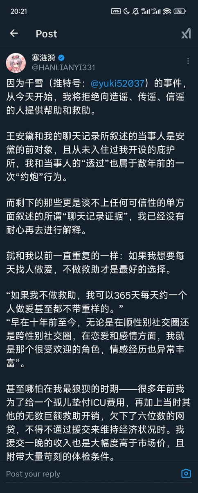

🍀🍥竹蜻蜓🍥🍀
@zqtlovekris99
@misakixyg 。。。不评价他到底有没有性侵，毕竟跟我没关系，但是看这照片我绷不住了长成这样凭什么觉得自己能365天每天约一个不带重样的市场价还比别人高，我以为是什么大帅哥呢还没我好看呢

三崎三世（讨厌寒涟漪版
@misakixyg
寒涟漪在公众压力面前终于选择了承认自己有过猥亵和与避难所的人发生性行为，去寒涟漪的避难所还是受他帮助确实有可能会受到无论是语言还是行为的骚扰，所以请在现实中注意并小心这个可能会对你进行不礼貌行为的人，以下是他的照片，请大家保护好自己防止不必要的骚扰 https://t.co/kmrc1Trtd3